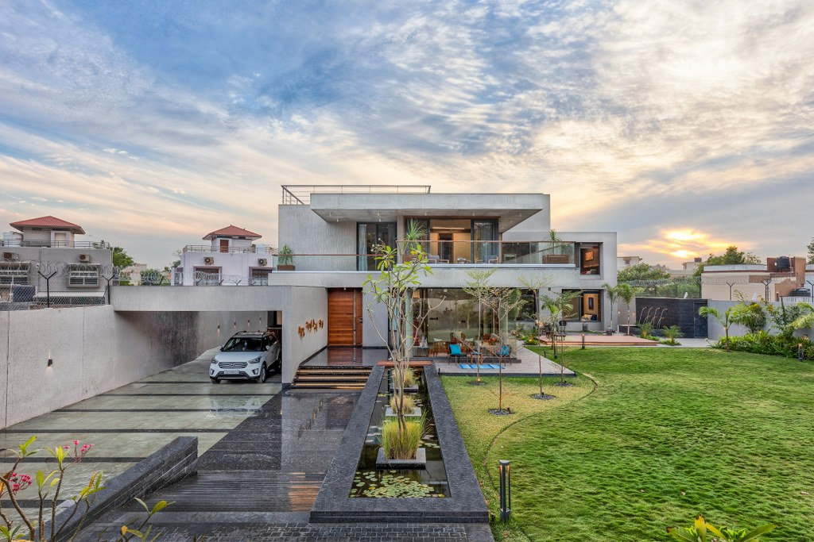

Chandrasekar Builders [P] Ltd is a company which stands by its name for Clear Title Deeds, Quality Construction and Time Schedule. All projects are approved by the respective authority for construction depending upon the project location
Read More..Brand reputation is the trustworthiness, integrity, and honesty people hold toward a builder. A builder with a poor reputation garners low trust. In turn, a builder with low trust is unable to generate the same level of interest as a builder with high trust.
Read More..Quality Management is an integrative philosophy of management for continuously improving the quality of products to be used in the construction and processes.
Read More..Residential & Commercial Properties in Chennai Born out of the alliance of three strong business hours - The Khivraj Group, The Space Group & The MK Group. Olympia Group is considered as one of the leaders in Chennai's growing real estate market, having made a mark with its diverse development portfolio spanning across Residential, Commercial and Industrial Developments, Recognized as an eco-friendly developer with its first project Olympia Technology Park being granted the status of the "Largest LEED Gold rated Green Building in the World".
business ,roots have grown steadilyChennai in 1980, KG Builders' business roots have grown steadily for many years and have earned us the reputation of being one of Chennai's most trusted realty companies. Having been around for more than 43 years, the company has built a deep connection with the people of Chennai that are guaranteed to last a lifetime.
Read More...A MODERN VILLA WITH CANTILEVER SLABS AND GLASS FACADES
